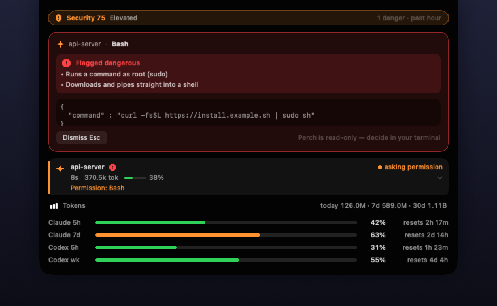
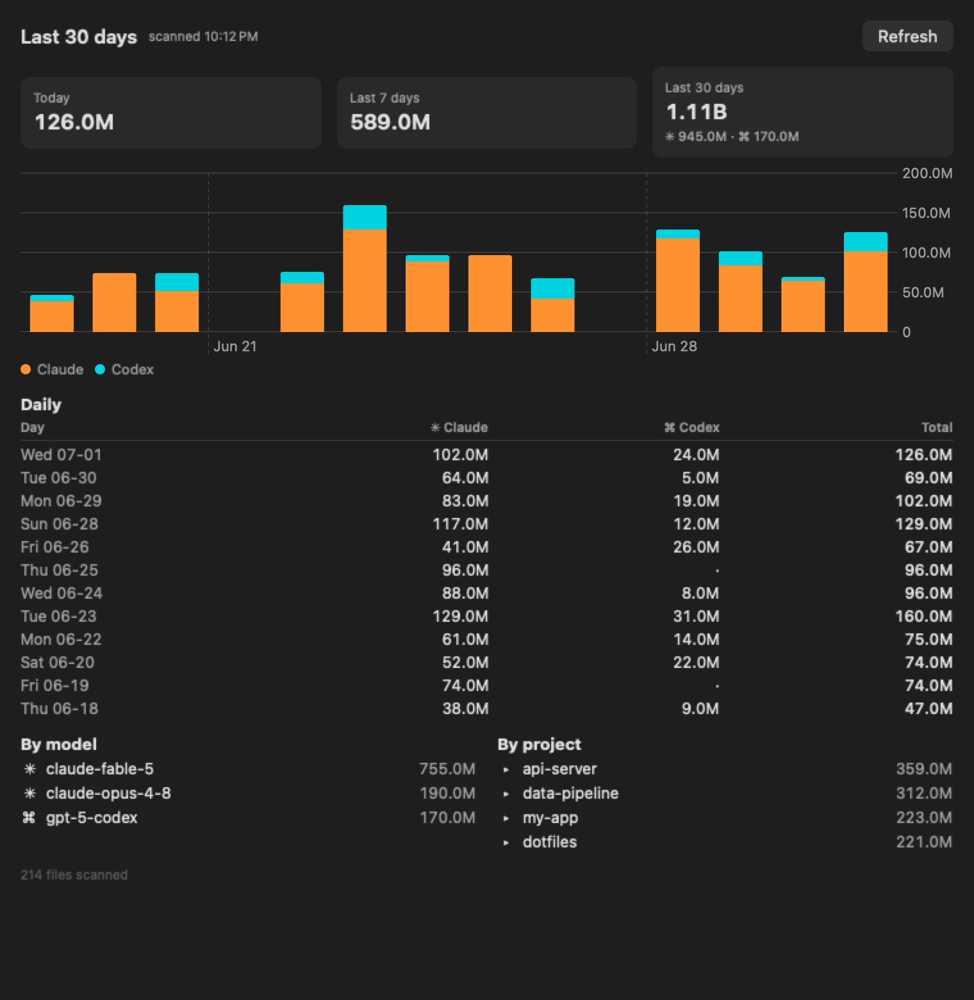

A read-only macOS notch and menu bar monitor for Claude Code and Codex. Every session, every dangerous command, every rate limit — in your line of sight, without your terminal ever losing focus.
Apple silicon (M1+) · macOS 14+ · MIT license

Auto-approve rules and relaxed permission modes keep agents fast — and make the dangerous calls silent. Perch risk-scores every tool call offline and makes the bad ones impossible to miss.
Every tool call is scored offline: rm -rf, sudo, curl | sh, credential reads, persistence tricks. Danger fires an OS notification and a red notch card with the exact command and why it was flagged — even when the call was auto-approved.
Esc dismisses, ←→ walk the queue. Your editor keeps focus.
Flags writes to the agent's own instruction surface: ~/.claude settings, hooks, and plugins (danger — they execute in future sessions), and CLAUDE.md / AGENTS.md / memory files (caution — injection that outlives the session). Shell-level writes count too.
Live list of all Claude Code and Codex sessions — running / waiting / idle, last message, context gauge, red badge on any session that just ran something dangerous. Plus a rolling 0–100 security score in the notch and menu bar.
Claude 5h/7d and Codex 5h/weekly windows with reset countdowns and an 80% warning. Token totals for today / 7 days / 30 days, and a full per-day, per-model, per-project dashboard.

Threat model: a coding agent hijacked by prompt injection — a poisoned repo file, web page, or dependency — or misbehaving on its own. Every tool call is scored against these categories:
| Threat | Examples |
|---|---|
| Memory / instruction poisoning | writes to CLAUDE.md, AGENTS.md, memory files, .cursorrules |
| Agent-config hijack | writes to ~/.claude settings / hooks / plugins, ~/.codex config — code that runs in future sessions |
| Destructive commands | rm -rf, mkfs, dd, disk/device writes, shutdown |
| Privilege escalation | sudo …, chmod 777 |
| Remote code execution | curl … | sh, wget … | bash |
| Credential access (shell) | reads of ~/.ssh, id_rsa, ~/.aws/credentials, .env, security dump-keychain |
| Persistence | LaunchAgents / LaunchDaemons, shell profiles |
| History / data loss | git push --force, git reset --hard, kill -9 |
| Suspicious network | plaintext http://, raw-IP fetches, netcat |
Every rule lives in one readable, self-tested file: RiskAssessor.swift.
curl -d @secret, scp to a remote), obfuscated commands (base64 -d | sh, eval, write-a-script-then-run-it), or MCP-tool calls. Treat it as a high-signal early warning, not a guarantee — and keep your agent's own permissions sensible too.
Ask an agent whether it's following your security rules and it will say yes. That answer costs nothing and proves nothing — the compromised case and the healthy case sound identical.
Perch stands outside the agent's process. What it shows isn't the agent's story about itself: session state, flagged commands, and token counts come from the harness's own records — which tools actually fired, what they actually ran. The model can narrate whatever it likes; the record is written by the harness, not by the narration.
And a watcher only earns that seat if it can't become the next trust problem — which is why Perch is read-only by construction (no approve/deny code path exists; decisions stay in your terminal), open source, and local-only. A watcher that phones home is just the trust problem wearing a new hat.
Read the essay: Your Coding Agent Will Always Tell You It's Safe →
.dmg from Releases and drag Perch into Applications./hooks once inside Codex and trust the Perch hook — then verify with Doctor.Any Swift toolchain works — CommandLineTools is enough, no Xcode needed. No Gatekeeper dance either.
git clone https://github.com/theMobiusStrip/perch cd perch make run
Verify the DMG: each release ships a .sha256 and a GPG-signed checksum.
One DMG, two hook installs, and every agent on your Mac is in the notch.